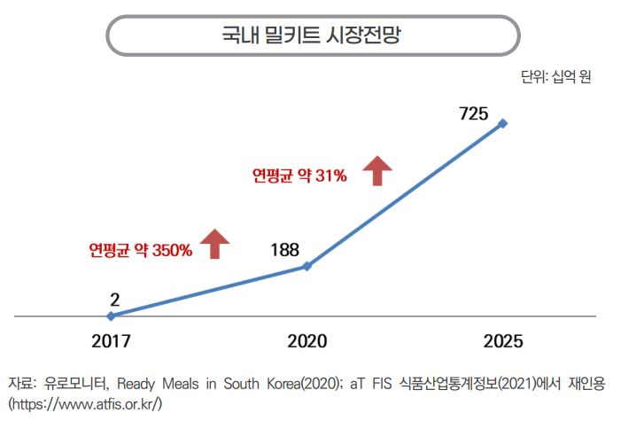
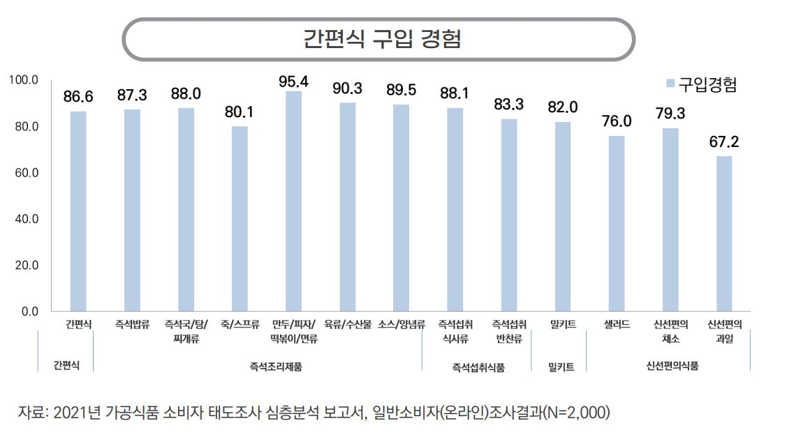
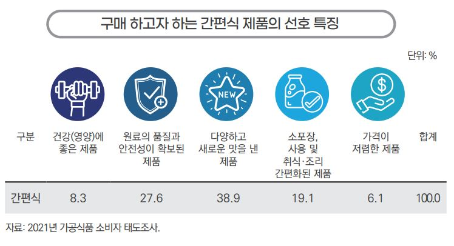
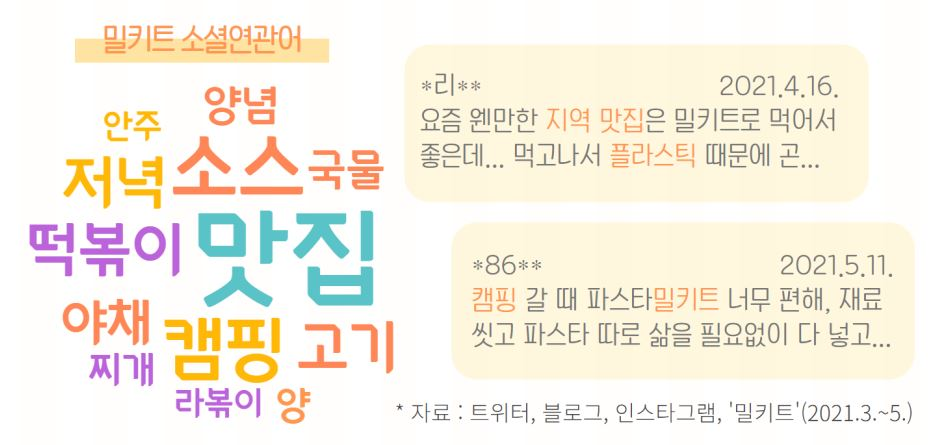
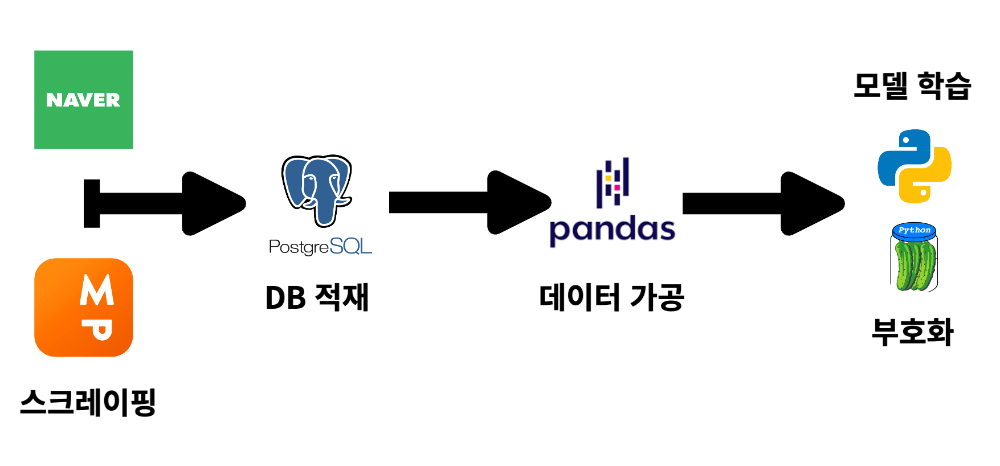
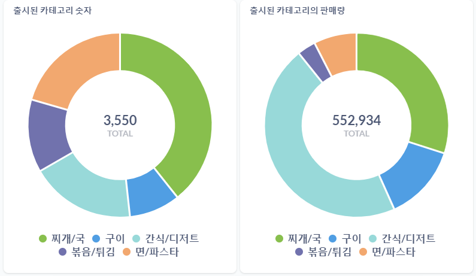
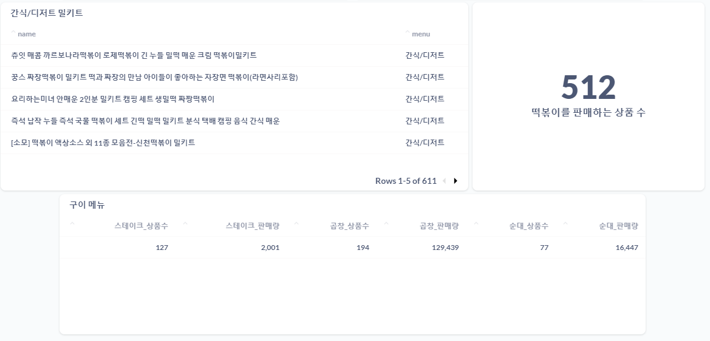
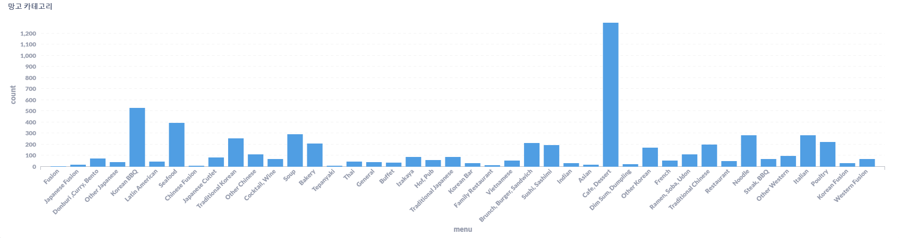
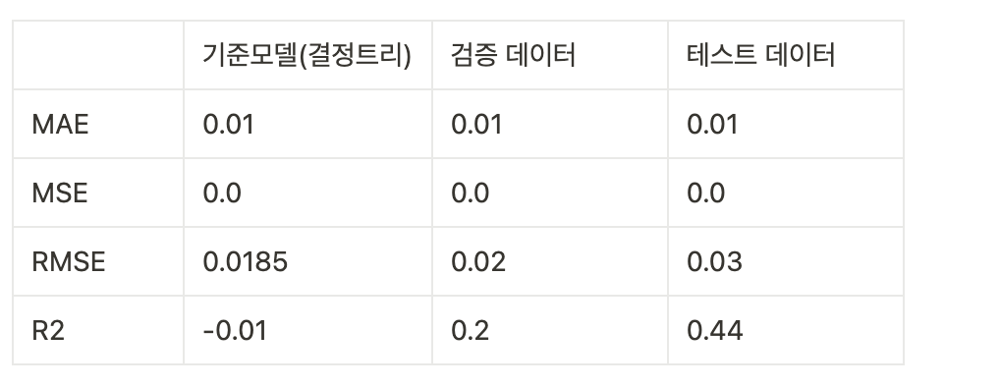

네이버 쇼핑 데이터를 이용한
밀키트 상품 분석 및 제품 기획
INTRO
기획배경 / 프로젝트 목표 / DATA
데이터 분석
데이터 파이프라인 및 EDA / 데이터 분석 / 모델 학습
결론
결론 / 프로젝트 회고 / 참고 자료
프로젝트 분석 코드
INTRO
1. 기획배경

- 식품산업통계정보에 의하면 가구주의 연령이 낮아지고, 코로나19로 인해 외식이 줄어들면서 간편식 및 밀키트에 대한 수요와 시장규모가 증가하고 있습니다.

- 2,000명을 대상으로 한 온라인 조사결과, 80%이상의 소비자들이 간편식 또는 밀키트를 구매한 경험이 존재합니다.
- 위의 두 그래프를 바탕으로 앞으로도 많은 소비자들이 밀키트를 찾을 것이라 예상하고 안정적인 매출을 창출할 수 있는 밀키트를 기획하고 판매 예측을 하는 프로젝트를 기획했습니다.
2. 프로젝트 목표
💡 프로젝트 목표
- 소비자들에게 인기가 있을 것이라 예상되는 밀키트를 기획하고 판매를 예측합니다.
- 시장조사를 통해 현재 소비자에게 인기있는 밀키트를 분석합니다.
- 밀키트 기획을 위해 소비자들이 많이 찾을만한 밀키트를 기획합니다.
- 시장조사 및 분석을 통해 기획한 밀키트가 얼마나 잘 팔릴 것인가 예측합니다.
💡 프로젝트 기대 효과
- 해당 프로젝트를 통해 기업은 시장성이 있는 제품을 기획하여 신상품을 출시할 떄, 실패를 줄일 수 있습니다. 또한 판매량을 예측하여 마케팅에 사용할 예산을 미리 결정할 수 있습니다.
3. DATA
💡 데이터 기획


- 간편식 선호 특징에 대한 표를 보면 전체의 38.9%에 해당하는 소비자가 다양하고 새로운 맛을 낸 제품을 선호한다는 것을 확인할 수 있습니다.
- 밀키트 소셜연관어에 대한 표를 보면 소비자들이 밀키트와 함께 맛집이라는 키워드를 검색한다는 것을 확인할 수 있습니다.
💡 데이터
- 밀키트 기획을 위해 사람들에게 인기가 있는 맛집에 대한 정보를 맛집 추천 사이트인 망고플레이트를 통해 수집했습니다.
- 시장조사를 위해 네이버 쇼핑에서 밀키트로 검색했을 때, 나오는 상품에 대한 정보를 수집했습니다.
데이터 분석
1. 데이터 파이프라인 및 EDA
💡 데이터 파이프라인

- 네이버 쇼핑 및 망고플레이트에서 데이터를 스크레이핑합니다.
- 네이버 쇼핑 : Selenium을 이용한 동적 스크레이핑을 진행합니다(3,550개 데이터).
- 망고플레이트 : BeautifulSoup을 이용한 정적 스크레이핑을 진행합니다(6,000개 데이터).
- PostgreSQL에 데이터를 저장합니다.
- Pandas를 통해 데이터를 가공합니다.
- 모델학습과 모델 부호화(pickle)을 진행합니다.
- 모델 학습 : 결정트리 모델, 랜덤포레스트 모델, XGB 모델, LightGBM 모델을 사용합니다.
- 모델 학습 데이터 : 네이버 쇼핑을 통해 스크레이핑한 데이터를 사용합니다.
- 모델 부호화 : LightGBM 모델을 사용합니다.
💡 EDA
- etc column으로 묶여 있던 리뷰 데이터와 판매량 데이터를 분리합니다.
- 판매량 데이터를 타겟값으로 설정합니다.
- 결측치의 경우, 배송비, 리뷰가 없는 것을 의미하기 때문에 '0'으로 대체합니다.
- 카테고리를 숫자로 mapping합니다.
- 상품명에 사용된 단어 중 약 1% 미만으로 사용된 단어와 의미없는 단어('', '인', '인분', '밀키트' 등)를 불용어로 처리하고 개별 column으로 나누어 저장합니다.
- 상품명 키워드를 TargetEncoder를 사용하여 인코딩을 진행합니다.
2. 데이터 분석
💡 시장조사

- 출시된 밀키트의 카테고리별 상품 수와 판매량을 확인해보면 ‘간식/디저트’(평균 392건 판매)와 ‘구이’(평균 234건 판매) 카테고리에서 평균보다 판매량이 많은 것을 확인할 수 있습니다(전체 평균 156건).

- 카테고리 ‘간식/디저트’의 경우, 약 84%의 상품이 떡볶이 밀키트를 판매하는 상품으로 시장에 신규 진출을 할 경우, 경쟁이 심할 것으로 예측됩니다.
- 카테고리 ‘구이’의 경우, 스테이크 밀키트는 경쟁이 치열할 것으로 예측되지만, 곱창과 순대 밀키트는 상대적으로 경쟁이 심하지 않을 것으로 예상됩니다.

- 주요도시에 위치한 매장을 카테고리별로 나누어보면 카페가 가장 많은 수를 차지하고, 고기집(족발, 보쌈 포함), 해산물, 국밥, 한식 순으로 나열할 수 있습니다.
- 소비자들이 많이 찾아본 순서로 상위 5개의 매장을 나열해보면 농민백암왕순대(순대), 마루심(장어), 브라이리퍼블릭푸드(양식), 해목(일식), 폴앤폴리나(베이커리)가 존재합니다.
3. 모델 학습
💡 모델 학습
- Train, Val, Test 데이터로 분리를 했습니다.
- 결정트리 모델, 랜덤포레스트 모델, XGB 모델, LightGBM 모델 등을 통해 모델학습을 진행했습니다 (평가지표 : MAE, MSE, RMSE, R2 점수 사용).
- 평가지표의 결과가 가장 잘 나온 모델인 LightGBM 모델을 부호화(pickle)하였습니다.
💡 모델 평가

- 모델의 평가지표가 다른 모델에 비해 성과가 좋으며, 검증 데이터보다 테스트 데이터에서 성과가 개선되는 모습을 확인할 수 있었습니다.
결론
1. 결론
- 데이터 분석으로 얻은 인사이트를 통해 밀키트를 기획할 때, 곱창 혹은 순대로 인기가 있는 매장(농민백암왕순대)과 협업할 경우, 실패확률을 줄이고 매출을 높일 수 있습니다.
- 밀키트 출시 후에는 특정 지역의 맛집과 협업하였다는 것을 강조하여 마케팅한다면 SNS상에서 많은 사람들에게 관심을 끌 수 있습니다.
- 추가적으로 밀키트 소비 시, 발생하는 플라스틱으로 인한 환경 오염이 걱정인 사람들을 위해 친환경 포장재를 사용할 것을 고려할 수 있습니다.
2. 프로젝트 회고
💡 긍정적인 부분
- 평점이 높고, 사람들이 관심을 가지고 있는 식당을 선정하여 밀키트를 기획함으로써 실제로 제품을 출시할 때에 성공확률을 높일 수 있습니다.
- 성장하는 밀키트 시장에서 경쟁이 비교적 심하지 않은 제품군을 발견하여 시장에서 경쟁력을 가질 수 있습니다.
- 코드를 수정하면 특정 상품(밀키트)이 아닌 다른 상품에도 적용할 수 있습니다.
💡 한계점
- 네이버 스크레이핑 과정에서 보다 세세한 정보(식재료, 밀키트 용량, 식품 세부 정보 등)를 수집하지 못해 ML모델이 단순합니다.
- 통계적 검정을 하지 않아 ‘구이 카테고리의 밀키트가 경쟁력이 심하지 않을 것이다’라는 가설에 대한 신뢰수준을 알 수 없습니다.
💡 개선 사항
- 다양한 특성을 추가하고, 하이퍼 파라미터를 튜닝한다면 보다 정확한 판매 예측이 가능합니다.
- 밀키트 상품 카테고리의 경쟁력을 확인할 수 있는 통계적 검정을 통해 가설에 대한 신뢰성을 높일 수 있습니다.